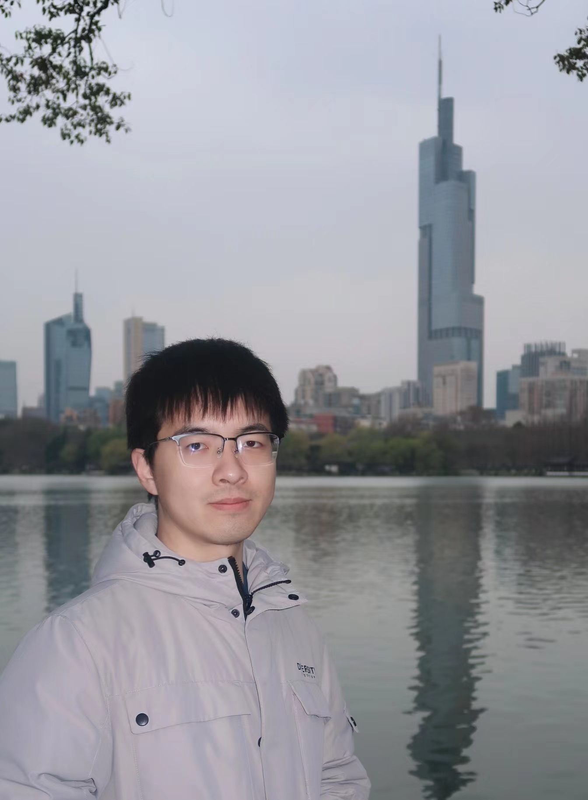

Jie-Jing Shao 邵杰晶
Ph.D., Postdoctoral Researcher, A*STAR CFAR, Singapore
I am a postdoctoral researcher at A*STAR CFAR, as part of the AGI pillar.
I finished my Ph.D. at Nanjing University, advised by Prof. Yu-Feng Li, and was a member of LAMDA Group, led by Prof. Zhi-Hua Zhou.
News
- 2026.08: FormalImG benchmark is accepted to Findings of EMNLP 2026 🎉!
- 2026.08: Give a talk at TechBeat: Neuro-Symbolic Agents: Why Do We Still Need Symbols in the Era of Large Language Models? (in Chinese)
- 2026.06: My PhD dissertation was selected as an Outstanding Doctoral Dissertation by the School of Computer Science, Nanjing University (only 5 in 2026).
- 2026.06: The website for our TPC @ IJCAI 2026 has launched. Welcome to participate!
- 2026.06: Our review of the IJCAI 2025 Travel Planning Challenge is accepted by FCS 🎉!
- 2026.05.20: I completed my PhD defense. Congratulations to myself! What a perfect coincidence to defend on Nanjing University's anniversary day 🎓.
- 2026.05: 2 papers are accepted by KDD 2026 🎉!
- 2026.05: 4 papers are accepted by ICML 2026 🎉! See you in Seoul 🇰🇷!
- 2026.04: Our proposal for the Second Travel Planning Challenge is accepted by IJCAI 2026!
- 2026.01: ChinaTravel is accepted by ICLR 2026 🎉! Many thanks to all co-authors!
- 2025.11: Our Neuro-Symbolic AI survey is highlighted by Nature News!
- 2025.10: We win the Most Innovative Approach Award at NeurIPS 2025 Embodied Agents Challenge 🏆!
Research
Our long-term goal is to build general and robust AI agents that contribute to the advancement of artificial general intelligence (AGI), enhance social productivity, and improve people's well-being. Our core approach centers on neuro-symbolic learning, which bridges data-driven learning with symbolic-driven search and reasoning, often regarded as the hallmark of third-generation AI. The neural component provides grounding in perception and physical interaction, while the symbolic component augments reasoning and planning.
Recently, my research has primarily focused on improving the generalization and data efficiency of Large Language Model-driven Agentic Systems, with the aim of advancing research on open scientific problems.
Education Experiences
-
2019.09 - 2026.06, Ph.D., School of Computer Science, Nanjing University.
- Advisor: Professor Yu-Feng Li (LAMDA Group).
- 2025.08 - 2026.04, Visiting Student, A*STAR CFAR, advised by Dr. Haiyan Yin, Dr. Xingrui Yu, Dr. Yueming Lyu, and Prof. Ivor Tsang (IEEE Fellow).
- 2015.09 - 2019.06, B.E., College of Computer Science and Technology (Tang Aoqing Honors Program in Science), Jilin University.
Publications
Featured Projects
-
Travel Planning Agents
A comprehensive ecosystem to advance language agents for real-world travel planning:
- Benchmark: Developed ChinaTravel (ICLR'26), the first benchmark for evaluating compositional language instructions, supporting both Chinese and English. [Poster] [Video] [Codebase] [Dataset] [Leaderboard]
- Challenge Organization: Organized international challenges at IJCAI 2026, IJCAI 2025, and AIC 2025 to promote agent research, with a FCS review paper summarizing the IJCAI 2025 challenge.
- Evaluation & Analysis: Systematically evaluated the large language models (Mind the Gap) for agentic travel planning, awarded Best Student Paper at AAAI'26 Workshop.
- Applications/Demonstrations: The 6th Global Campus Artificial Intelligence Algorithm Elite Competition, Third Prize in National Finals & Second Prize of Jiangsu Province, 2024; National "AI+" Industry Application Innovation Competition, Excellence Award, 2024.
-
NeurIPS 2025 Challenge on Foundation Models Meet Embodied Agents. 2025.10-2025.12
Most Innovative Approach Award -
AAMAS 2023 Imperfect-information Card Games Competition. 2023.6
Top 8 Finalists -
Multi-Task Learning for Recommendation. 2022.11
Spark Award by Huawei, Reported by department.
Awards & Honors
- Outstanding Doctoral Dissertation, School of Computer Science, Nanjing University, 2026.06.
- Best Student Paper Award, AAAI 2026 Workshop on Trustworthy Agentic AI, 2026.
- Most Innovative Approach Award, NeurIPS 2025 Challenge on Foundation Models Meet Embodied Agents, 2025.
- Huawei Scholarship, Nanjing University, 2025.
- Best Paper Award, Robust Machine Learning in Open Environments Workshop@PAKDD 2024.
- Postgraduate Research & Practice Innovation Program of Jiangsu Province, Jiangsu Province, 2024.
- Tencent Scholarship, Nanjing University, 2022.
- Outstanding Graduate Students, Nanjing University, 2021.
- National Scholarship, Nanjing University, 2021.
- LAMDA Elite Award, Runner-up, 2021.
- Tang Aoqing Honors Program of Research and Practice Award, First Prize, Jilin University, 2016.6.
- ACM-ICPC Asia Regional Contest, 2 Gold Medals, Shenyang, 2015.10 & Dalian, 2016.10.
- CCPC Regional Contest, Gold Medal (4th place), Changchun, 2016.9.
- CCPC Northeast Collegiate Programming Contest, Gold Medal (2nd place), Changchun, 2016.9.
- CCPC Jilin Province Collegiate Programming Contest, 2 Championships, Changchun, 2015.9 & 2016.9.
Presentations
- Invited Talk, TechBeat: Neuro-Symbolic Agents: Why Do We Still Need Symbols in the Era of Large Language Models? (in Chinese) [Slides, Video].
- Oral Presentation, KDD 2024 [Slides].
- Oral Presentation, OpenML Workshop@PAKDD 2024 [Slides].
- Invited Presentation, Causality Seminar [Slides].
- Invited Presentation, IJCAI-YES 2023 [Slides].
- Poster Spotlight Session, "机器学习及其应用" (MLA) 2021.
Academic Service
- Co-Organizer: IJCAI 2026 Competition: Travel Planning Challenge; IJCAI 2025 Competition: Travel Planning Challenge.
- Senior Program Committee: IJCAI 2025.
- Reviewer for Conferences: ICML 2023, 2024, 2025, 2026 (Gold Reviewers); NeurIPS 2023, 2024, 2025; ICLR 2024, 2025, 2026; KDD 2024, 2025 (Excellent Reviewers), 2026; AAAI 2023, 2024, 2025, 2026; IJCAI 2024, 2025, 2026; CVPR 2026; ECCV 2026; ECAI 2023; ACML 2021, 2022.
- Reviewer for Journals: Machine Learning; Neural Networks; Journal of Artificial Intelligence Research; IEEE Transactions on Artificial Intelligence.